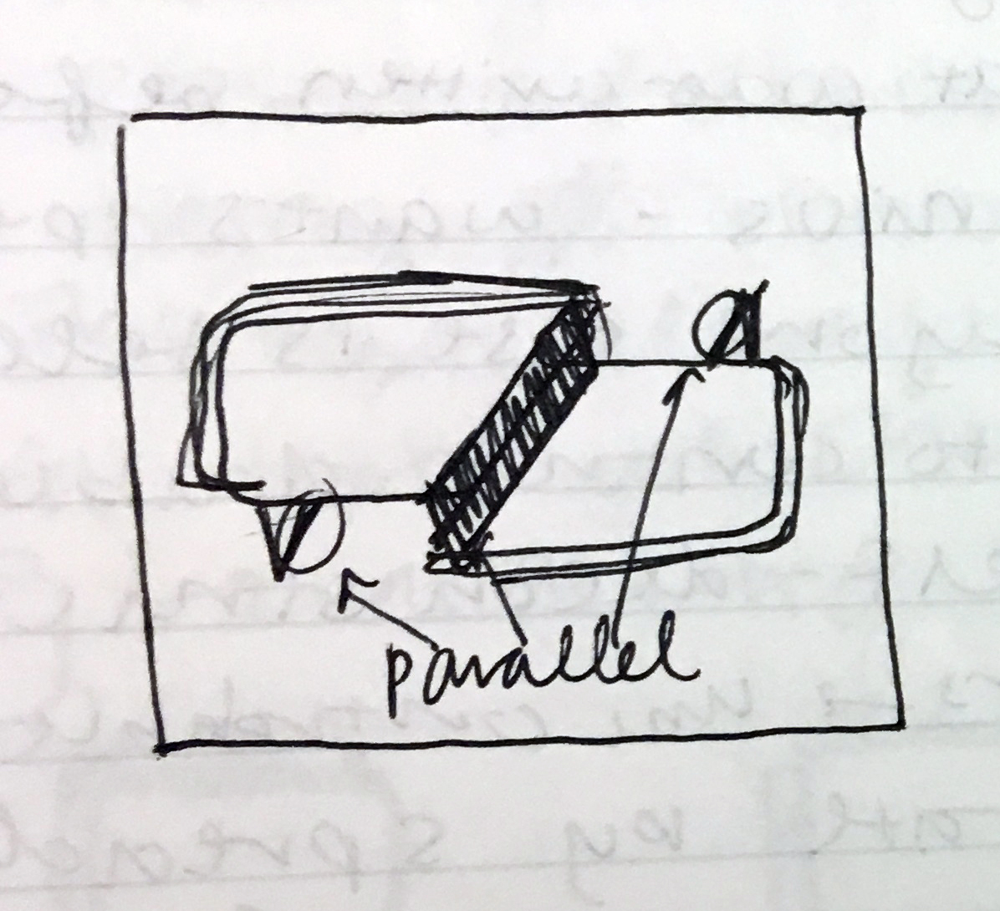

Flipside is a media startup looking to create a platform for better online political discussions. They're trying to get people to share their opinions on main claims in articles without being siloed into particular political parties.
In terms of the logo creation, I was given free reign to choose colors and fonts, and sometimes, inspiration hits you out of nowhere and makes your life easy.
The number of iterations for the Flipside logo was the least I have ever had to do for any design, coming in at a grand total of 2! (Well ~4 if you count weird text placements and color flipping, but close enough.)
I'm really happy with how this logo turned out — it conveys the duality suggested by the name Flipside, its slight offset allows either red or blue to appear to be in front, and the colors are muted enough to hint at politics without immediately making anyone angry.
Being friends with cofounders Jason and Sidd has also resulted in me helping them design some other things like graphics for presentations or icons for old versions of the website. I've also helped suggest styling such as the thick underline for main claims.

First drafts doodled in class
Digital drafts in Illustrator
Colliding circles for a presentation
Flutter is a social GIF creation app that initially started as a nearby event finder. I like that both the logo and the name are versitile enough to be used for a number of different ideas for social apps.
I was asked to design a "quirky / cute / fun penguin" in the style of yik yak / meerkat. After doing some research, I discovered that baby penguins are much cuter than adult penguins .
My first draft was actually just based on a penguin head. It was meant to be a stylistic check point that I would add a body to, but ended up being quite close to the final draft.
With the addition of details like hair and wings, the (mostly) cute flutter logo was born. For next time, maybe slightly oval eyes would make the logo look more alive.
When I showed Spencer, the app developer, my first draft, he mentioned that he might of seen something like it before. A few weeks later while watching Netflix, I saw someone who looked a little familiar. I guess my subconcious affects my design more than I realize. ¯\_(ツ)_/¯
Flutter's first logo
My first draft
More iterations in Illustrator
Timely is an app that considers your preferences and returns a list of optimal food destinations that you can go to, eat at, and come back within an established time limit.
This was the first logo I ever created for an app / startup. It was designed on a train somewhere between Providence and Boston, airdropped to my phone, and texted to Aakash, the app developer, along with a bunch of different colored circles that were also used in the app.
I unfortunately cannot find the iterations for Timely's logo, but in some ways I'm glad. I've definitely come a long way since then.
Timely hourglass
Colored circles